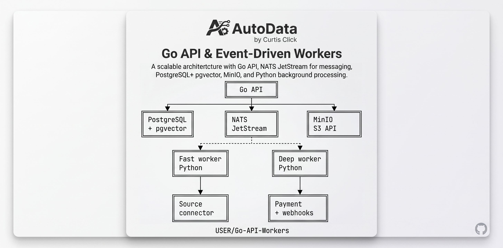

The car gets misidentified
“99 Silverado” and “1999 Chevrolet C/K 1500 2WD” should lead to the same vehicle, not two conflicting answers.
A better answer for the person asking
Finding the right repair or maintenance information should not feel like searching through a junk drawer. AutoData brings scattered information together, matches it to the right vehicle, and gives people a clear answer they can trust.

01 / THE PROBLEM
Someone asks, “What do I need for my 1999 Silverado?” The useful answer is buried across manuals, websites, scans, parts lists, and old descriptions. Worse, those sources may call the same vehicle different things. A good product quietly sorts that out so a technician, shop owner, or driver can get the right information without becoming a detective first.
“99 Silverado” and “1999 Chevrolet C/K 1500 2WD” should lead to the same vehicle, not two conflicting answers.
Repair instructions, diagrams, specifications, and parts information live in different places and formats.
The first useful answer should be available before every supporting detail has been collected and checked.
02 / THE CHOICE
Both paths can start fast. Only one is designed to keep getting faster.
The comparison stays closed until you choose the path you want to inspect.
A generic prompt can get a demo moving quickly. It cannot decide what “the same vehicle” means, guarantee a complete source, or make a failed enrichment safe.
Build an app that accepts a vehicle and a URL,
uses AI to read automotive articles,
and returns useful structured JSON.
Keep it simple and make the interface look good.flowchart LR
S[URL] --> LLM[LLM]
V[Vehicle] --> LLM
LLM --> J[JSON]
J --> U[UI]Quick and cheap. Great for validating an idea or opening a door.
−Full of gaps. Duplicate vehicles, silent omissions, and opaque decisions arrive with the demo.
−A dead-end is expensive. SWEs eventually have to untangle the codebase before they can improve it.
A professional build starts by clarifying what must stay true when the happy path ends: the right vehicle, a trustworthy source, a useful answer now, and a way to recover when something fails.
Stable identity. New source spellings enrich the right vehicle instead of creating a new one.
+Fast now, deeper later. A viewable revision ships before optional enrichment finishes.
+Recoverable failure. Retries, dead letters, evidence, and section-level status make the system operable.
03 / THE PROOF
Every layer answers a question that the happy-path demo avoids.
Canonical identity and configuration aliases resolve “99 Silverado” to the correct record.
identityImmutable snapshots preserve hashes, licenses, versions, and retrieval context.
provenanceNormalized candidates are compared, deduplicated, and quarantined when confidence is low.
qualityFast-lane contracts publish a useful revision while deep enrichment works independently.
delivery04 / THE HANDOFF
I help turn ambitious product ideas into software that can survive its first real users, its first bad source, and its first successful scale-up.
Review the working repo ↗